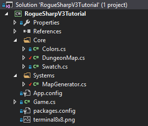
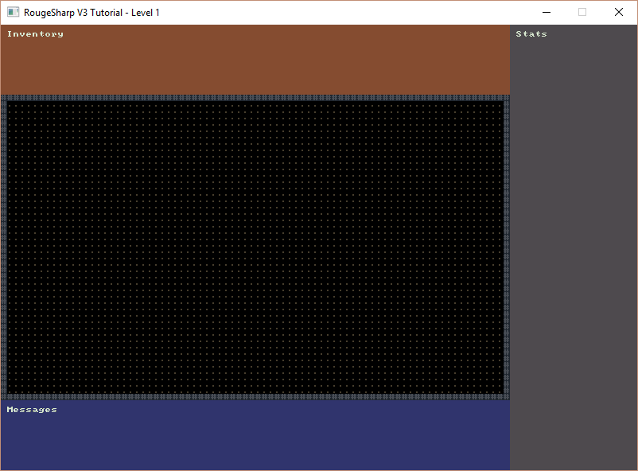

Simple Map Drawing
In this tutorial we’ll begin using the Map features of RogueSharp. We will create our own DungeonMap class that will start off very simple but give us lots of room for growth. We’ll also be drawing this to the map sub console and displaying it on the screen.
Creating the DungeonMap
When it comes to the Map class in RogueSharp it is designed to be generic so that it can be used in a variety of games. It has plenty of functionality for path-finding, determining field-of-view, selecting Cells and more.
What RogueSharp doesn’t have is any concept of doors, stairs, traps, bookcases, torches, or any other dungeon features that are specific to an individual game’s domain. These are really up to the game designer and not something that I feel should be baked into an engine.
With that said, we do really want all of these features in our game, so how can we add them and still use RogueSharp? The answer is we can create our own class that inherits all of the features of RougeSharp’s Map class but at the same time extends it with the features that are specific to our game.
Start by creating a new class in the Core folder called DungeonMap.cs and add the following code to it.
// Our custom DungeonMap class extends the base RogueSharp Map class
public class DungeonMap : Map
{
// The Draw method will be called each time the map is updated
// It will render all of the symbols/colors for each cell to the map sub console
public void Draw( RLConsole mapConsole )
{
mapConsole.Clear();
foreach ( Cell cell in GetAllCells() )
{
SetConsoleSymbolForCell( mapConsole, cell );
}
}
private void SetConsoleSymbolForCell( RLConsole console, Cell cell )
{
// When we haven't explored a cell yet, we don't want to draw anything
if ( !cell.IsExplored )
{
return;
}
// When a cell is currently in the field-of-view it should be drawn with ligher colors
if ( IsInFov( cell.X, cell.Y ) )
{
// Choose the symbol to draw based on if the cell is walkable or not
// '.' for floor and '#' for walls
if ( cell.IsWalkable )
{
console.Set( cell.X, cell.Y, Colors.FloorFov, Colors.FloorBackgroundFov, '.' );
}
else
{
console.Set( cell.X, cell.Y, Colors.WallFov, Colors.WallBackgroundFov, '#' );
}
}
// When a cell is outside of the field of view draw it with darker colors
else
{
if ( cell.IsWalkable )
{
console.Set( cell.X, cell.Y, Colors.Floor, Colors.FloorBackground, '.' );
}
else
{
console.Set( cell.X, cell.Y, Colors.Wall, Colors.WallBackground, '#' );
}
}
}
}
You’ll notice on line 7 that our DungeonMap class inherits from the base RogueSharp Map class. This means that we already get access to everything that Map can do!
The drawing code is pretty simple. We iterate through every Cell in the Map and then choose how to display it based on if it is explored, if it is walkable, and if it is in field-of-view or not.
At this point we don’t have any special map features that actually require us to have our own class. Don’t worry though, those features are only a few tutorials away.
Creating the MapGenerator
Now we need a class that will be responsible for generating interesting maps for us. Make a new folder called Systems and inside the folder create a new class called MapGenerator.cs
To start off with we’ll make one of the simplest maps. It will be all open floors with a wall around the entire edge of the map.
Add the following code to MapGenerator.cs
public class MapGenerator
{
private readonly int _width;
private readonly int _height;
private readonly DungeonMap _map;
// Constructing a new MapGenerator requires the dimensions of the maps it will create
public MapGenerator( int width, int height )
{
_width = width;
_height = height;
_map = new DungeonMap();
}
// Generate a new map that is a simple open floor with walls around the outside
public DungeonMap CreateMap()
{
// Initialize every cell in the map by
// setting walkable, transparency, and explored to true
_map.Initialize( _width, _height );
foreach ( Cell cell in _map.GetAllCells() )
{
_map.SetCellProperties( cell.X, cell.Y, true, true, true );
}
// Set the first and last rows in the map to not be transparent or walkable
foreach ( Cell cell in _map.GetCellsInRows( 0, _height - 1 ) )
{
_map.SetCellProperties( cell.X, cell.Y, false, false, true );
}
// Set the first and last columns in the map to not be transparent or walkable
foreach ( Cell cell in _map.GetCellsInColumns( 0, _width - 1 ) )
{
_map.SetCellProperties( cell.X, cell.Y, false, false, true );
}
return _map;
}
}
As with the DungeonMap, the MapGenerator also is not that interesting at this point but it gives us a solid foundation for adding features in the future.
Your project file structure should now look something like this:

Hooking up the MapGenerator and Drawing
To start using our DungeonMap we need to first add it to Game.cs
public static DungeonMap DungeonMap { get; private set; }
Then in our Main() method of Game.cs we need to use our MapGenerator to create our DungeonMap.
MapGenerator mapGenerator = new MapGenerator( _mapWidth, _mapHeight );
DungeonMap = mapGenerator.CreateMap();
Now that the map is created all that is left is to draw it in our OnRootConsoleRender() method of Game.cs
DungeonMap.Draw( _mapConsole );
If everything worked when you run the game you should now see the map console has been replaced with this:

Code on GitHub
As always the code for the tutorial series so far can be found on GitHub:
Bored waiting for the next tutorial? The complete tutorial project is already finished and the source code is available on Github:
- Sample Roguelike game using RogueSharp and RLNet console
- Sample Roguelike game using RogueSharp and SadConsole